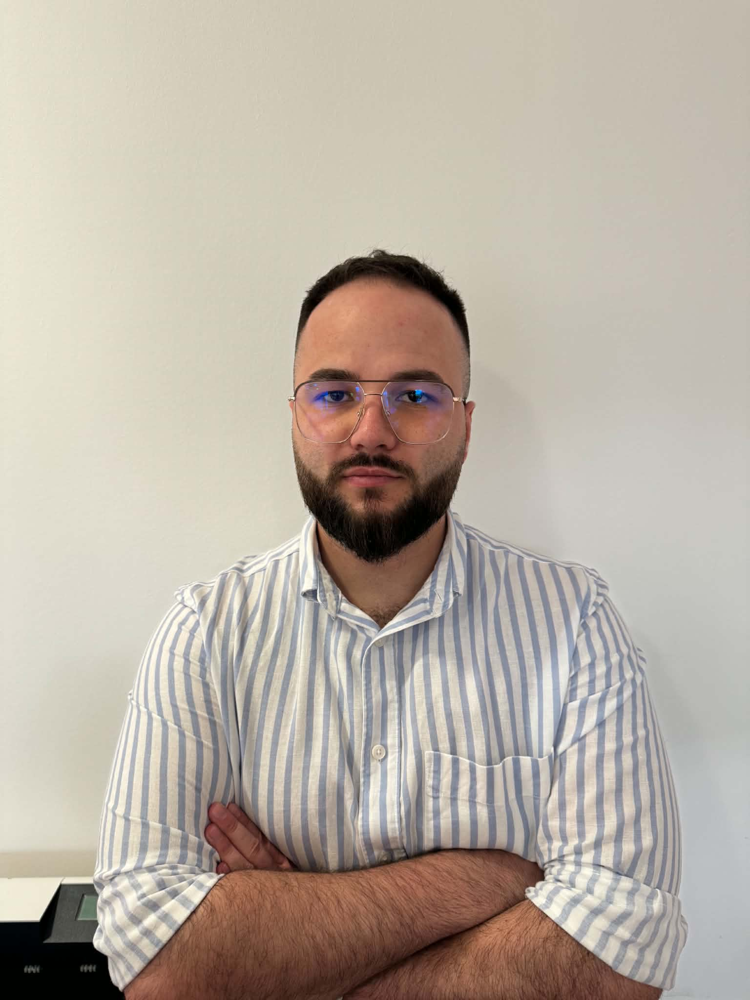

Google Tanúsítvány
AI Fundamentals
Folyamatban
Kiterjedt Microsoft felhő- (Azure) és on-premise infrastruktúra üzemeltetési tapasztalattal rendelkező szakember vagyok. A klasszikus rendszerszervezői és üzemeltetői munkám mellett saját, autonóm AI ügynököket (Agentic AI) tervezek és építek a manuális munkafolyamatok automatizálására. Célom a nagyvállalati IT rendszerek stabil, biztonságos üzemeltetése, kiegészítve az általam fejlesztett intelligens, folyamatoptimalizáló megoldásokkal.

Elvégezve
IBM AI Intro (AI)
Rendszerszintű megközelítés a hibrid üzemeltetés, az adatvezérlés és az AI fejlesztés terén.
Microsoft Azure és on-premise (NAS) infrastruktúrák felügyelete. Országos szoftverfrissítések menedzselése, biztonságos release-ek és automatizált (Backup/DR) mentések biztosítása.
Saját tervezésű autonóm ügynökök (AI Agents) és LLM-alapú intelligens asszisztensek fejlesztése. Repetitív feladatok és napi manuális rutinok intelligens munkafolyamatokká alakítása.
Precíz hídépítés az IT és az üzlet között. Üzleti igények (BRD) agilis specifikálása (User Story-k), valamint Power BI és SQL alapú proaktív adatvizualizáció a menedzsment számára.
Gyakorlati tapasztalatok a biztonság, az adatvezérlés
és az autonóm AI rendszerek területén.
A Kihívás & Cél
A manuális kutatási, adatelemzési és hibakeresési folyamatok töredezettségének felszámolása egy általam tervezett, proaktív és felügyelt autonómiával működő intelligens döntéstámogató környezettel.
Architektúra & Biztonság
Saját fejlesztésű, moduláris agentic keretrendszerre épülő megoldás. Feladata a szekvenciális teendők láncba rendezése és kontextusmegőrzése önálló végrehajtás és szigorú biztonsági kontroll mellett.
Eredmény & Hatás A manuális operációs erőfeszítés radikális csökkenése, rövidülő döntési ciklusok, és valós idejű technológiai másodvélemény (second opinion).
Kétszintű specifikációs modell alkalmazása: mérnöki dokumentáció a fejlesztőknek és funkcionális folyamatleírások a menedzsmentnek az új 2FA hitelesítési és biztonsági folyamatok zökkenőmentes terítéséhez.
Eredmény
Stabil, szabványosított biztonsági release
Anonimizált befektetési perszónákra és MiFID-modellekre épülő generatív AI megoldás kidolgozása a prémium ügyfelek portfólió-felkészülésének automatizált rövidítésére, szigorú banktitok mellett.
Eredmény
Rövidülő döntési és felkészülési ciklusok
Ügyfelek digitális jelenlétének és webes infrastruktúrájának teljes körű technológiai menedzsmentje, kiegészítve automatizált, adatvezérelt Power BI dashboardokkal a vezetői döntések támogatására.
Eredmény
Mérhető, adatvezérelt technológiai felügyelet
Banki compliance, nagyvállalati Azure üzemeltetés és folyamatautomatizáció.
Komplex lakossági és prémium számla- és befektetési portfóliók kezelése. Value proposition kommunikációja, banki core-rendszerek kezelése szigorú MNB compliance mellett. Adminisztratív és kockázatkezelési munkafolyamatok optimalizálása, adatvezérelt cross-sell / up-sell stratégiák végrehajtása.
Nagyvállalati IT alkalmazások backlog menedzsmentje és a front-office operációs folyamatok technikai támogatása. Üzleti követelmények (BRD) lefordítása IT specifikációkra (User Story-k), részvétel az agilis (Scrum) termékfejlesztési ciklusokban. Rendszerszintű automatizálási lehetőségek és elakadások feltárása.
Teljes körű Azure infrastruktúra ismeret és üzemeltetés. Országos szintű rendszerek bevetése, hibrid (cloud/on-premise) környezetek felügyelete. Szoftverfrissítések, biztonságos release-ek menedzselése és a repetitív üzemeltetési feladatok automatizálása. Szigorú, precíz üzemeltetési dokumentációk készítése az IT és az üzleti oldal számára.
Vállalati NAS szerverek hálózati telepítése, konfigurálása és proaktív felügyelete. Biztonsági mentések (backup) és adatfolyamatok automatizálása, valamint ezek részletes dokumentálása. Weboldalak end-to-end fejlesztése. Adatgyűjtési és adatelemzési architektúrák automatizált fenntartása a menedzsment számára.
Mérnöki alapok és nemzetközileg elismert szakmai akkreditációk.
Gábor Dénes Egyetem
Mikes Kelemen Felnőtt és Ifjúság Gimnázium
Mikes Kelemen Felnőtt és Ifjúság Gimnázium
Folyamatban
Folyamatban
Folyamatban
Elvégezve
Elvégezve
Elvégezve
Folyamatban
Elvégezve
Folyamatban
Elvégezve
Elvégezve
Elvégezve
Elvégezve
Nyitott vagyok alkalmazásüzemeltetői, Azure felhő-adminisztrátori, valamint AI és folyamatautomatizálási szerepkörökre.